What we checked
The paper’s numbers, and ours
Left is the exhibit as it appears in the paper. Right is the same cells recomputed from free data, each beside the printed value.
Figure 1
Figure 1: Out-of-sample R2 as a function of the number of predictors (k)
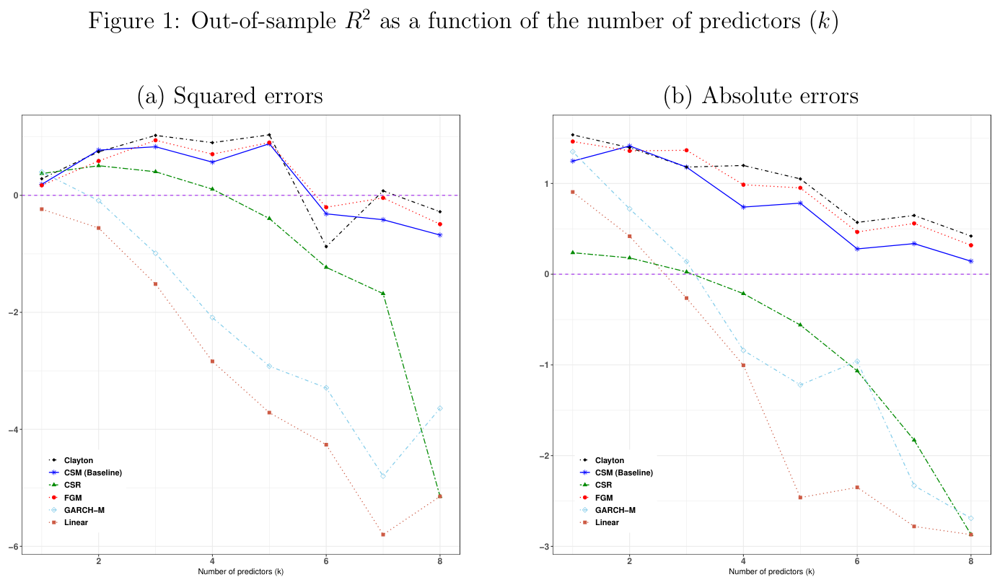
A plot of the Table 3 R-squared values against k. Every point in it is a cell scored above, so the figure carries no number of its own.
Figure 2
Figure 2: Wealth growth for the CSM (Baseline, k = 3), buy-and-hold, and momentum strategies
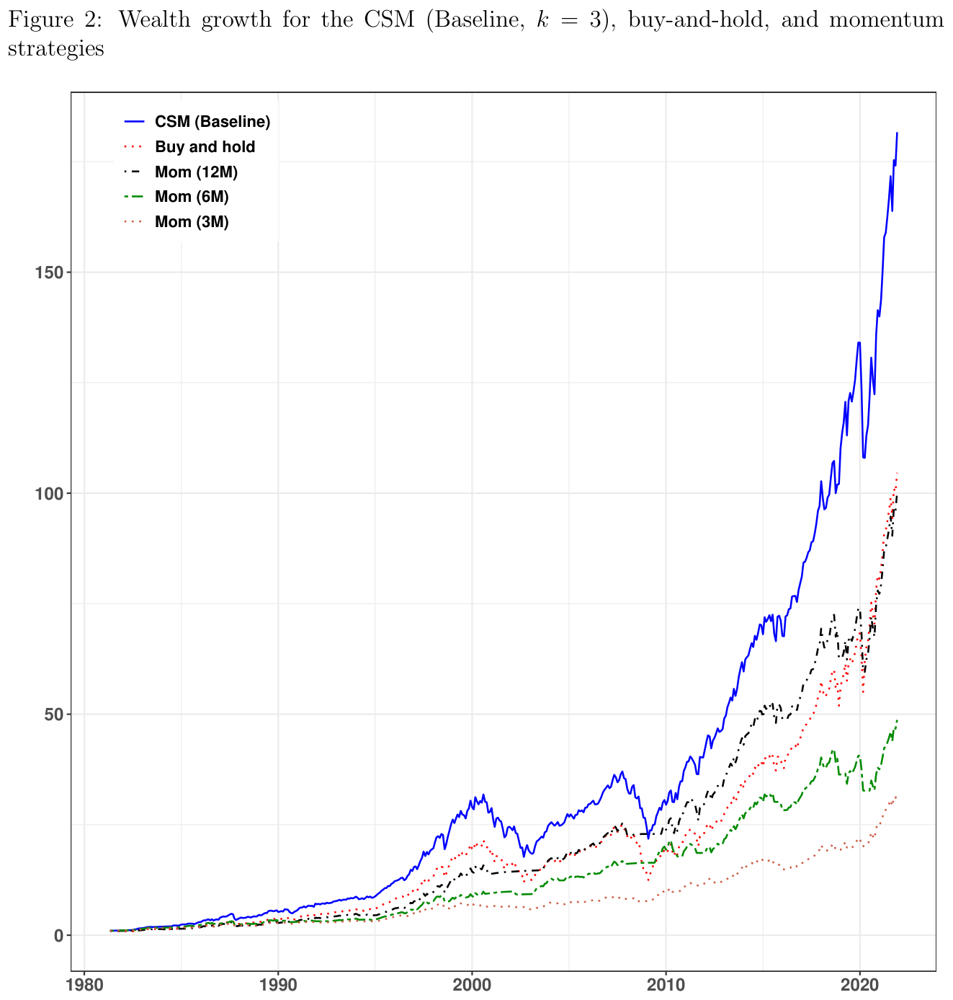
A wealth-growth plot. The endpoints are Table 6's terminal wealth, scored above; the path between them is not printed as numbers.
Figure 3
Figure 3: Wealth growth for the CSM (Baseline), copula-based, GARCH-M, CSR, and linear strategies, each with k = 3
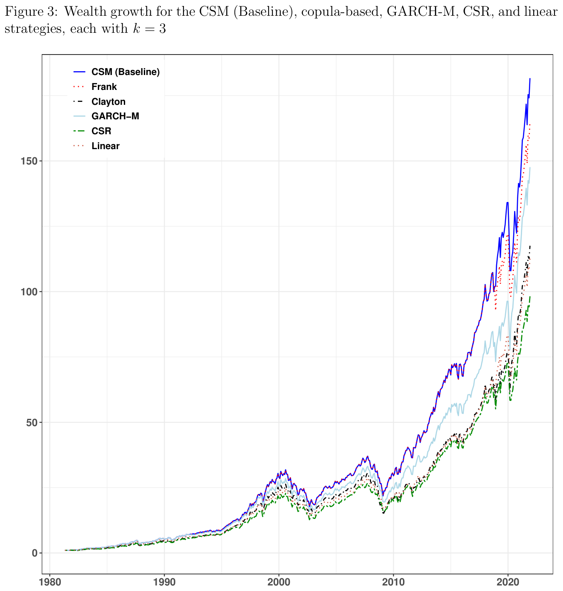
As Figure 2, across the copula and benchmark strategies.
Figure 4
Figure 4: Terminal wealth as a function of the number of predictors (k) for CSM (Baseline), Clayton, GARCH-M, CSR, and linear models
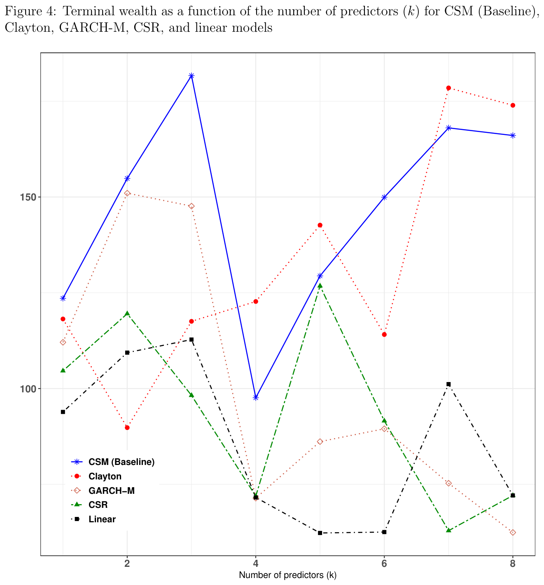
A plot of terminal wealth against k. Every point is a cell of Table 6 or B1, both scored above.
Figure A1
Figure A1: Out-of-sample R2 as a function of the number of predictors (k): MSE-based selection
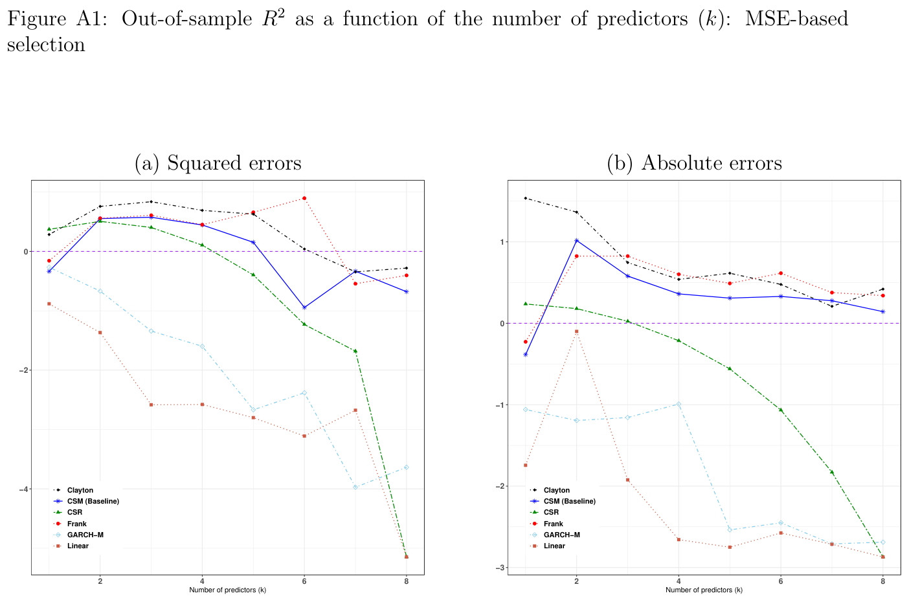
As Figure 1, for MSE-based selection.
Figure C1
Figure C1: Wealth growth during the Global Financial Crisis: 3-month momentum, CSR, GARCH-M, and buy-and-hold, together with the CSM (Baseline) and FGM copula strate- gies. The CSM (Baseline) and FGM wealth paths coincide and therefore overlap.
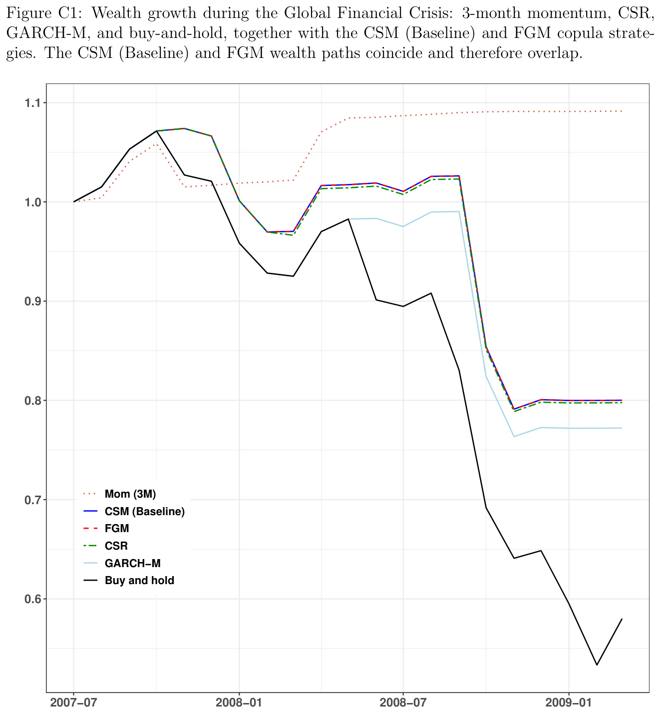
The crisis wealth paths, whose endpoints are Table C1's terminal wealth.
Figure C2
Figure C2: Wealth growth during the COVID crisis period: 3-month momentum, CSM (Poly), FGM copula, CSR, GARCH-M, and buy-and-hold. The FGM and buy-and-hold wealth paths coincide, as do the CSR and CSM (Poly) paths, and the corresponding curves therefore overlap.
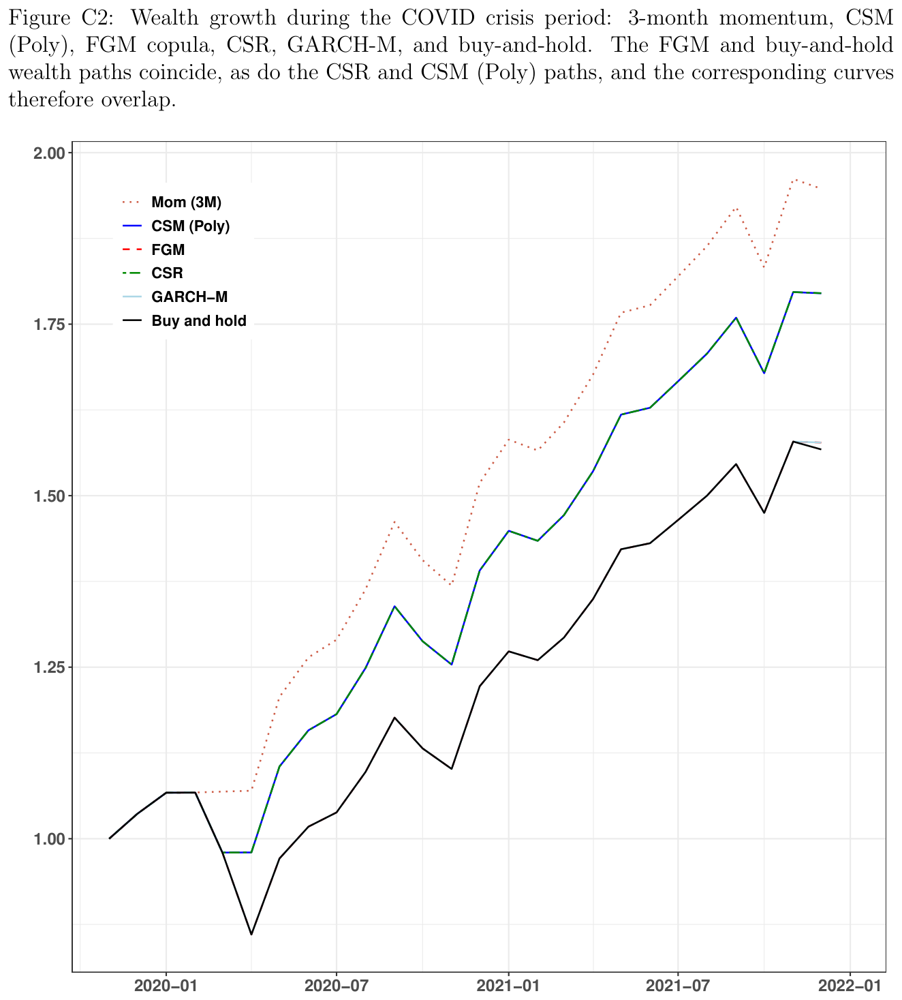
As Figure C1, for the COVID window.
Figure D1
Figure D1: Wealth growth for CSM (Baseline), copula-based (Clayton, Gaussian), CSR, and MS strategies with nine predictors (including momentum).
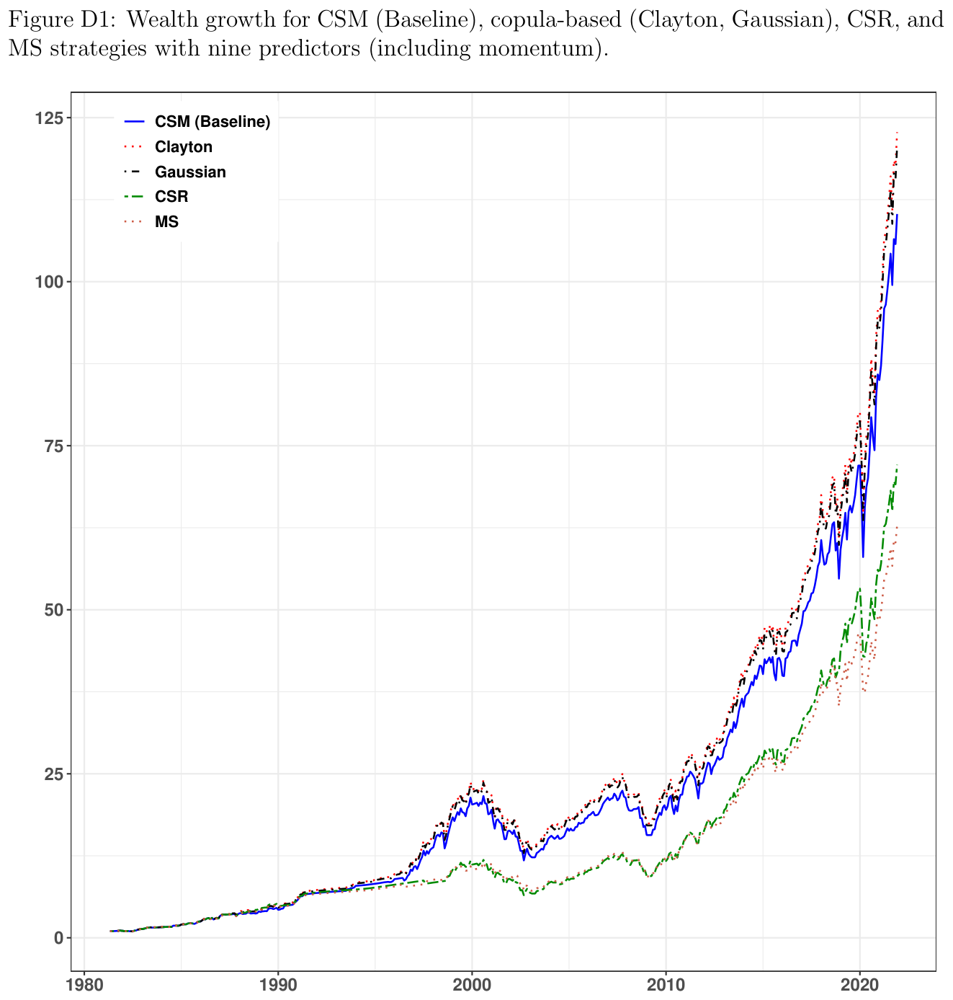
The nine-predictor wealth paths, whose endpoints are Table D1's.
Table 1
Table 1: Sample correlations
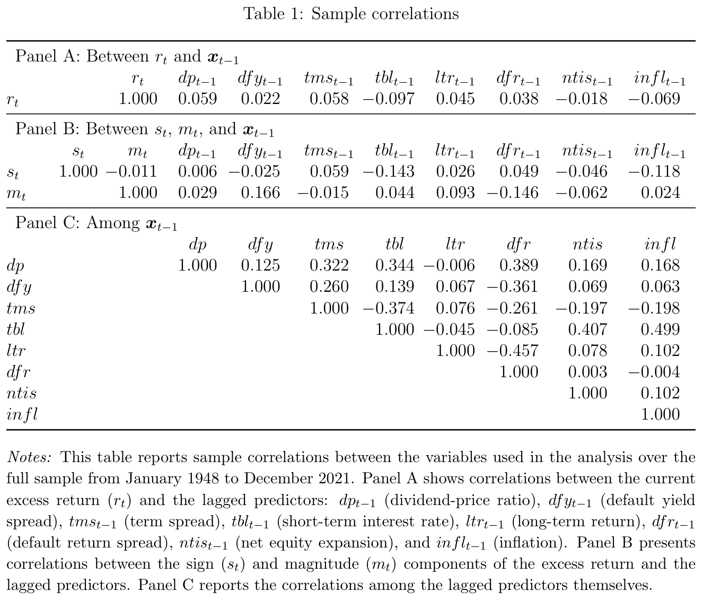
| printed | ours | |||
|---|---|---|---|---|
| Panel A: Between r and x, r | r | 1.0 | 1.0 | match |
| Panel A: Between r and x, r | dp | 0.059 | 0.059 | match |
| Panel A: Between r and x, r | dfy | 0.022 | 0.022 | match |
| Panel A: Between r and x, r | tms | 0.058 | 0.057 | differs |
| Panel A: Between r and x, r | tbl | -0.097 | -0.098 | differs |
| Panel A: Between r and x, r | ltr | 0.045 | 0.085 | differs |
| Panel A: Between r and x, r | dfr | 0.038 | 0.038 | match |
| Panel A: Between r and x, r | ntis | -0.018 | -0.017 | differs |
| Panel A: Between r and x, r | infl | -0.069 | -0.069 | match |
| Panel B: Between s , m , and x, s | s | 1.0 | 1.0 | match |
| Panel B: Between s , m , and x, s | m | -0.011 | -0.011 | match |
| Panel B: Between s , m , and x, s | dp | 0.006 | 0.006 | match |
| Panel B: Between s , m , and x, s | dfy | -0.025 | -0.025 | match |
| Panel B: Between s , m , and x, s | tms | 0.059 | 0.059 | match |
| Panel B: Between s , m , and x, s | tbl | -0.143 | -0.143 | match |
| Panel B: Between s , m , and x, s | ltr | 0.026 | 0.026 | match |
16 of 64 cells shown.
the code that produced the right-hand column
alpha_archive/replications/decomp2026_eval.py · correlations()
def correlations(frame: pd.DataFrame) -> dict[str, float]:
"""Table 1, all three panels, over the whole 887-month sample (p.11).
The decomposition is the paper's own: r is the raw excess return, s its
sign and m its magnitude, each correlated against predictors already lagged
one month by `load`. Panel C is the predictor block on its own, printed as
an upper triangle, so only the cells the page actually fills are emitted.
"""
r = frame["xs"].to_numpy()
s = (r > 0).astype(float)
m = np.abs(r)
x = {p: frame[p].to_numpy() for p in PREDICTORS}
def rho(a: np.ndarray, b: np.ndarray) -> float:
return float(np.corrcoef(a, b)[0, 1])
out: dict[str, float] = {}
pa = "T1/Panel A: Between r and x"
out[f"{pa}/r/r"] = 1.0
for p in PREDICTORS:
out[f"{pa}/r/{p}"] = rho(r, x[p])
pb = "T1/Panel B: Between s , m , and x"
series = {"s": s, "m": m}
out[f"{pb}/s/s"] = 1.0
out[f"{pb}/s/m"] = rho(s, m)
out[f"{pb}/m/m"] = 1.0
for row, values in series.items():
for p in PREDICTORS:
out[f"{pb}/{row}/{p}"] = rho(values, x[p])
# Panel C prints the upper triangle only: the cell below the diagonal is
# the same number and the page leaves it blank, so writing it would invent
# an address the paper never used.
pc = "T1/Panel C: Among x"
for i, a in enumerate(PREDICTORS):
out[f"{pc}/{a}/{a}"] = 1.0
for b in PREDICTORS[i + 1:]:
out[f"{pc}/{a}/{b}"] = rho(x[a], x[b])
return outTable 2
Table 2: Best subset selection based on AUC criterion
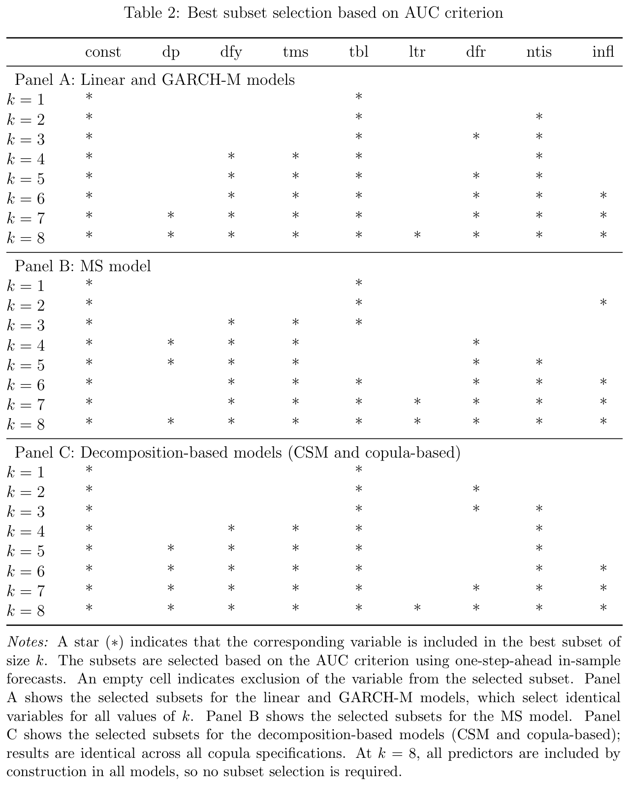
A grid of asterisks marking which predictors each model selected at each k. Our selections are computed and printed in the notebook, but the checklist harvested no numeric cells from it, so there is nothing here to score against.
Table 3
Table 3: Out-of-sample R2 values by subset size (k) and loss function
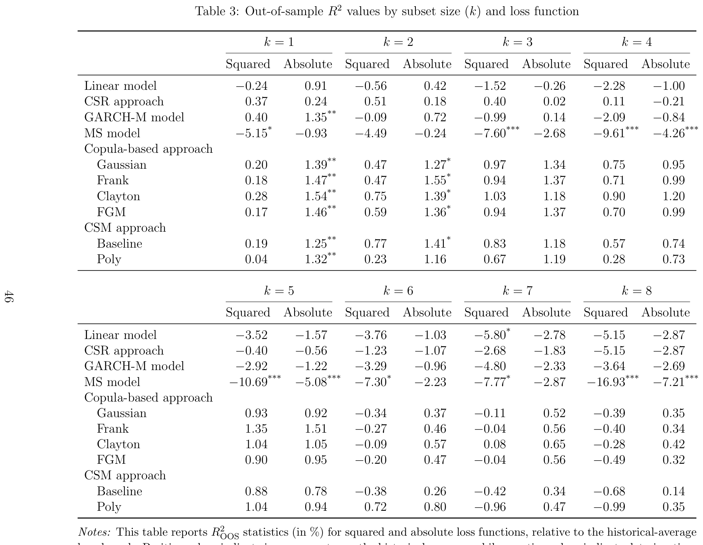
| printed | ours | |||
|---|---|---|---|---|
| Linear model, k = 1 | Squared | -0.24 | -0.24 | differs |
| Linear model, k = 1 | Absolute | 0.91 | 0.91 | differs |
| Linear model, k = 2 | Squared | -0.56 | -0.56 | differs |
| Linear model, k = 2 | Absolute | 0.42 | 0.42 | differs |
| Linear model, k = 3 | Squared | -1.52 | -1.52 | differs |
| Linear model, k = 3 | Absolute | -0.26 | -0.26 | differs |
| Linear model, k = 4 | Squared | -2.28 | -2.28 | differs |
| Linear model, k = 4 | Absolute | -1.0 | -1.0 | differs |
| CSR approach, k = 1 | Squared | 0.37 | 0.37 | differs |
| CSR approach, k = 1 | Absolute | 0.24 | 0.24 | differs |
| CSR approach, k = 2 | Squared | 0.51 | 0.51 | differs |
| CSR approach, k = 2 | Absolute | 0.18 | 0.19 | differs |
| CSR approach, k = 3 | Squared | 0.4 | 0.4 | differs |
| CSR approach, k = 3 | Absolute | 0.02 | 0.02 | differs |
| CSR approach, k = 4 | Squared | 0.11 | 0.11 | differs |
| CSR approach, k = 4 | Absolute | -0.21 | -0.21 | differs |
16 of 160 cells shown.
the code that produced the right-hand column
alpha_archive/replications/decomp2026_eval.py · r2_oos()
def r2_oos(actual: np.ndarray, model: np.ndarray, benchmark: np.ndarray,
absolute: bool = False) -> float:
"""Campbell-Thompson R2 against the rolling historical average, in percent."""
em, eb = actual - model, actual - benchmark
loss = (np.abs if absolute else np.square)
return float(100.0 * (1.0 - loss(em).sum() / loss(eb).sum()))Table 4
Table 4: Out-of-sample model performance comparison using MCS procedure with squared loss
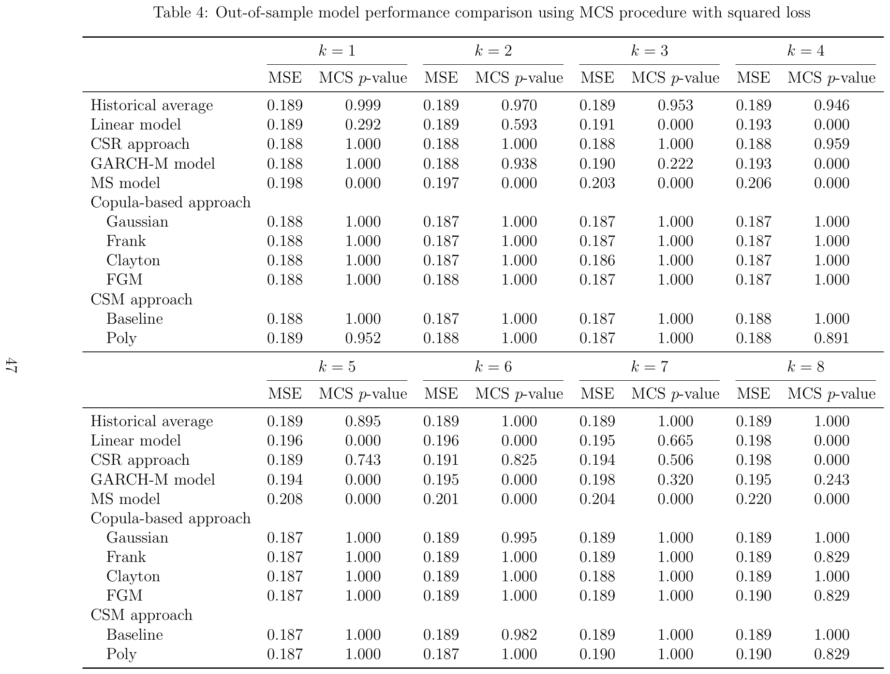
| printed | ours | |||
|---|---|---|---|---|
| Historical average, k = 1 | MSE | 0.189 | 0.189 | match |
| Historical average, k = 1 | MCS p-value | 0.999 | 0.875 | differs |
| Historical average, k = 2 | MSE | 0.189 | 0.189 | match |
| Historical average, k = 2 | MCS p-value | 0.97 | 0.84 | differs |
| Historical average, k = 3 | MSE | 0.189 | 0.189 | match |
| Historical average, k = 3 | MCS p-value | 0.953 | 0.839 | differs |
| Historical average, k = 4 | MSE | 0.189 | 0.189 | match |
| Historical average, k = 4 | MCS p-value | 0.946 | 0.864 | differs |
| Linear model, k = 1 | MSE | 0.189 | 0.189 | match |
| Linear model, k = 1 | MCS p-value | 0.292 | 0.496 | differs |
| Linear model, k = 2 | MSE | 0.189 | 0.190 | differs |
| Linear model, k = 2 | MCS p-value | 0.593 | 0.806 | differs |
| Linear model, k = 3 | MSE | 0.191 | 0.191 | match |
| Linear model, k = 3 | MCS p-value | 0.0 | 0.6 | differs |
| Linear model, k = 4 | MSE | 0.193 | 0.193 | match |
| Linear model, k = 4 | MCS p-value | 0.0 | 0.0 | differs |
16 of 176 cells shown.
the code that produced the right-hand column
alpha_archive/replications/decomp2026_eval.py · mcs_pvalues()
def mcs_pvalues(losses: dict[str, np.ndarray], boot: int = 5000,
block: int = 2, seed: int = 20260204) -> dict[str, float]:
"""Hansen, Lunde and Nason (2011), the T_max variant of Section 3.1.2.
The paper reports p-values from the R MCS package and states neither the
block length nor the number of replications, so the package's own defaults
are used and recorded as an assumption. The seed is fixed because a p-value
that moves between runs cannot be scored against a printed one.
"""
names = list(losses)
L = np.column_stack([losses[n] for n in names])
n, m = L.shape
rng = np.random.default_rng(seed)
# Stationary bootstrap indices, shared across models so the resampling
# cannot favour one of them.
idx = np.empty((boot, n), dtype=np.int64)
for b in range(boot):
i, pos = rng.integers(0, n), 0
while pos < n:
run = min(rng.geometric(1.0 / block), n - pos)
take = (np.arange(i, i + run) % n)
idx[b, pos:pos + run] = take
pos += run
i = rng.integers(0, n)
alive = list(range(m))
pvals: dict[str, float] = {}
running = 0.0
while len(alive) > 1:
sub = L[:, alive]
d = sub - sub.mean(axis=1, keepdims=True) # loss vs the live average
dbar = d.mean(axis=0)
boot_mean = d[idx].mean(axis=1) # (boot, alive)
var = boot_mean.var(axis=0, ddof=1)
var = np.where(var < 1e-18, 1e-18, var)
tstat = dbar / np.sqrt(var)
tboot = (boot_mean - dbar) / np.sqrt(var)
tmax, tmax_boot = tstat.max(), tboot.max(axis=1)
p = float((tmax_boot >= tmax).mean())
running = max(running, p)
worst = int(np.argmax(tstat))
pvals[names[alive[worst]]] = running
alive.pop(worst)
pvals[names[alive[0]]] = 1.0
return pvalsTable 5
Table 5: Out-of-sample model performance comparison using MCS procedure with absolute loss
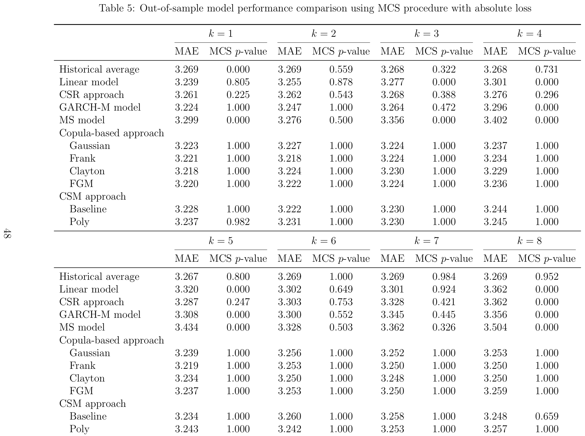
| printed | ours | |||
|---|---|---|---|---|
| Historical average, k = 1 | MAE | 3.269 | 3.269 | match |
| Historical average, k = 1 | MCS p-value | 0.0 | 0.1 | differs |
| Historical average, k = 2 | MAE | 3.269 | 3.269 | match |
| Historical average, k = 2 | MCS p-value | 0.559 | 0.231 | differs |
| Historical average, k = 3 | MAE | 3.268 | 3.269 | differs |
| Historical average, k = 3 | MCS p-value | 0.322 | 0.344 | differs |
| Historical average, k = 4 | MAE | 3.268 | 3.269 | differs |
| Historical average, k = 4 | MCS p-value | 0.731 | 0.310 | differs |
| Linear model, k = 1 | MAE | 3.239 | 3.239 | match |
| Linear model, k = 1 | MCS p-value | 0.805 | 0.183 | differs |
| Linear model, k = 2 | MAE | 3.255 | 3.255 | match |
| Linear model, k = 2 | MCS p-value | 0.878 | 0.518 | differs |
| Linear model, k = 3 | MAE | 3.277 | 3.277 | match |
| Linear model, k = 3 | MCS p-value | 0.0 | 0.3 | differs |
| Linear model, k = 4 | MAE | 3.301 | 3.301 | match |
| Linear model, k = 4 | MCS p-value | 0.0 | 0.0 | differs |
16 of 176 cells shown.
the code that produced the right-hand column
alpha_archive/replications/decomp2026_eval.py · mcs_pvalues()
def mcs_pvalues(losses: dict[str, np.ndarray], boot: int = 5000,
block: int = 2, seed: int = 20260204) -> dict[str, float]:
"""Hansen, Lunde and Nason (2011), the T_max variant of Section 3.1.2.
The paper reports p-values from the R MCS package and states neither the
block length nor the number of replications, so the package's own defaults
are used and recorded as an assumption. The seed is fixed because a p-value
that moves between runs cannot be scored against a printed one.
"""
names = list(losses)
L = np.column_stack([losses[n] for n in names])
n, m = L.shape
rng = np.random.default_rng(seed)
# Stationary bootstrap indices, shared across models so the resampling
# cannot favour one of them.
idx = np.empty((boot, n), dtype=np.int64)
for b in range(boot):
i, pos = rng.integers(0, n), 0
while pos < n:
run = min(rng.geometric(1.0 / block), n - pos)
take = (np.arange(i, i + run) % n)
idx[b, pos:pos + run] = take
pos += run
i = rng.integers(0, n)
alive = list(range(m))
pvals: dict[str, float] = {}
running = 0.0
while len(alive) > 1:
sub = L[:, alive]
d = sub - sub.mean(axis=1, keepdims=True) # loss vs the live average
dbar = d.mean(axis=0)
boot_mean = d[idx].mean(axis=1) # (boot, alive)
var = boot_mean.var(axis=0, ddof=1)
var = np.where(var < 1e-18, 1e-18, var)
tstat = dbar / np.sqrt(var)
tboot = (boot_mean - dbar) / np.sqrt(var)
tmax, tmax_boot = tstat.max(), tboot.max(axis=1)
p = float((tmax_boot >= tmax).mean())
running = max(running, p)
worst = int(np.argmax(tstat))
pvals[names[alive[worst]]] = running
alive.pop(worst)
pvals[names[alive[0]]] = 1.0
return pvalsTable 6
Table 6: Out-of-sample performance statistics for the trading strategies for k = 1, 2, 3, 7
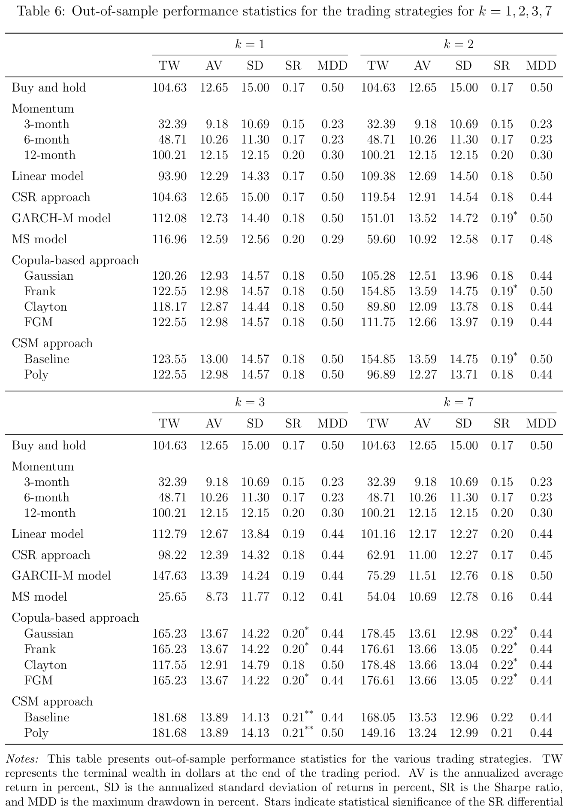
| printed | ours | |||
|---|---|---|---|---|
| Buy and hold, k =1 | TW | 104.63 | 104.62 | differs |
| Buy and hold, k =1 | AV | 12.65 | 12.65 | match |
| Buy and hold, k =1 | SD | 15.0 | 15.0 | match |
| Buy and hold, k =1 | SR | 0.17 | 0.17 | match |
| Buy and hold, k =1 | MDD | 0.5 | 0.5 | match |
| Buy and hold, k =2 | TW | 104.63 | 104.62 | differs |
| Buy and hold, k =2 | AV | 12.65 | 12.65 | match |
| Buy and hold, k =2 | SD | 15.0 | 15.0 | match |
| Buy and hold, k =2 | SR | 0.17 | 0.17 | match |
| Buy and hold, k =2 | MDD | 0.5 | 0.5 | match |
| Momentum, 3-month, k =1 | TW | 32.39 | 40.49 | differs |
| Momentum, 3-month, k =1 | AV | 9.18 | 10.07 | differs |
| Momentum, 3-month, k =1 | SD | 10.69 | 11.28 | differs |
| Momentum, 3-month, k =1 | SR | 0.15 | 0.16 | differs |
| Momentum, 3-month, k =1 | MDD | 0.23 | 0.32 | differs |
| Momentum, 3-month, k =2 | TW | 32.39 | 40.49 | differs |
16 of 280 cells shown.
the code that produced the right-hand column
alpha_archive/replications/decomp2026_eval.py · switching()
def switching(forecast: np.ndarray, mkt: np.ndarray, rf: np.ndarray) -> dict:
"""The paper's switching rule, and everything Table 6 reports about it."""
equity = forecast > 0
ret = np.where(equity, mkt, rf)
# Nothing is held before the first decision, so the first allocation is not
# a switch. Charging it would put a cost on buy-and-hold, whose printed
# 104.63 is exactly the uncosted compounding of the index.
switched = np.empty(len(equity), dtype=bool)
switched[0] = False
switched[1:] = equity[1:] != equity[:-1]
wealth = np.cumprod((1.0 + ret) * np.where(switched, 1.0 - COST, 1.0))
peak = np.maximum.accumulate(wealth)
return {
"returns": ret,
"excess": ret - rf,
"wealth": wealth,
"TW": float(wealth[-1]),
"AV": float(ret.mean() * MONTHS * 100.0),
"SD": float(ret.std(ddof=1) * np.sqrt(MONTHS) * 100.0),
"SR": float((ret - rf).mean() / ret.std(ddof=1)),
"MDD": float(np.max(1.0 - wealth / peak)),
"switches": int(switched.sum()),
}Table 7
Table 7: CER gains against historical average for γ = 5
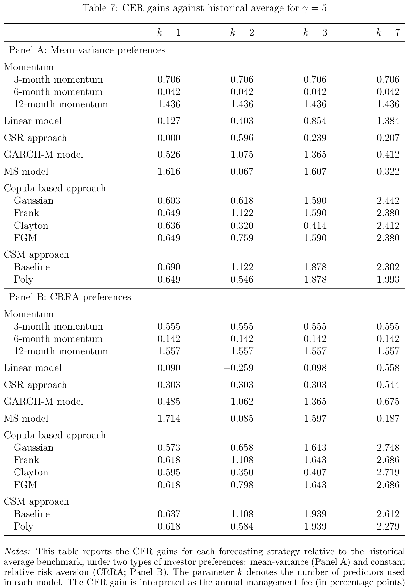
| printed | ours | |||
|---|---|---|---|---|
| Panel A: Mean-variance preferences, 3-month momentum | k = 1 | -0.706 | -0.139 | differs |
| Panel A: Mean-variance preferences, 3-month momentum | k = 2 | -0.706 | -0.139 | differs |
| Panel A: Mean-variance preferences, 3-month momentum | k = 3 | -0.706 | -0.139 | differs |
| Panel A: Mean-variance preferences, 3-month momentum | k = 7 | -0.706 | -0.139 | differs |
| Panel A: Mean-variance preferences, 6-month momentum | k = 1 | 0.042 | 0.054 | differs |
| Panel A: Mean-variance preferences, 6-month momentum | k = 2 | 0.042 | 0.054 | differs |
| Panel A: Mean-variance preferences, 6-month momentum | k = 3 | 0.042 | 0.054 | differs |
| Panel A: Mean-variance preferences, 6-month momentum | k = 7 | 0.042 | 0.054 | differs |
| Panel A: Mean-variance preferences, 12-month momentum | k = 1 | 1.436 | 1.047 | differs |
| Panel A: Mean-variance preferences, 12-month momentum | k = 2 | 1.436 | 1.047 | differs |
| Panel A: Mean-variance preferences, 12-month momentum | k = 3 | 1.436 | 1.047 | differs |
| Panel A: Mean-variance preferences, 12-month momentum | k = 7 | 1.436 | 1.047 | differs |
| Panel A: Mean-variance preferences, Linear model | k = 1 | 0.127 | 0.134 | differs |
| Panel A: Mean-variance preferences, Linear model | k = 2 | 0.403 | 0.436 | differs |
| Panel A: Mean-variance preferences, Linear model | k = 3 | 0.854 | 0.949 | differs |
| Panel A: Mean-variance preferences, Linear model | k = 7 | 1.384 | 1.507 | differs |
16 of 104 cells shown.
the code that produced the right-hand column
alpha_archive/replications/decomp2026_eval.py · cer_mean_variance()
def cer_mean_variance(ret: np.ndarray) -> float:
return float(ret.mean() - 0.5 * GAMMA * ret.var(ddof=1))Table 8
Table 8: CER gains against CSM (Baseline) for γ = 5
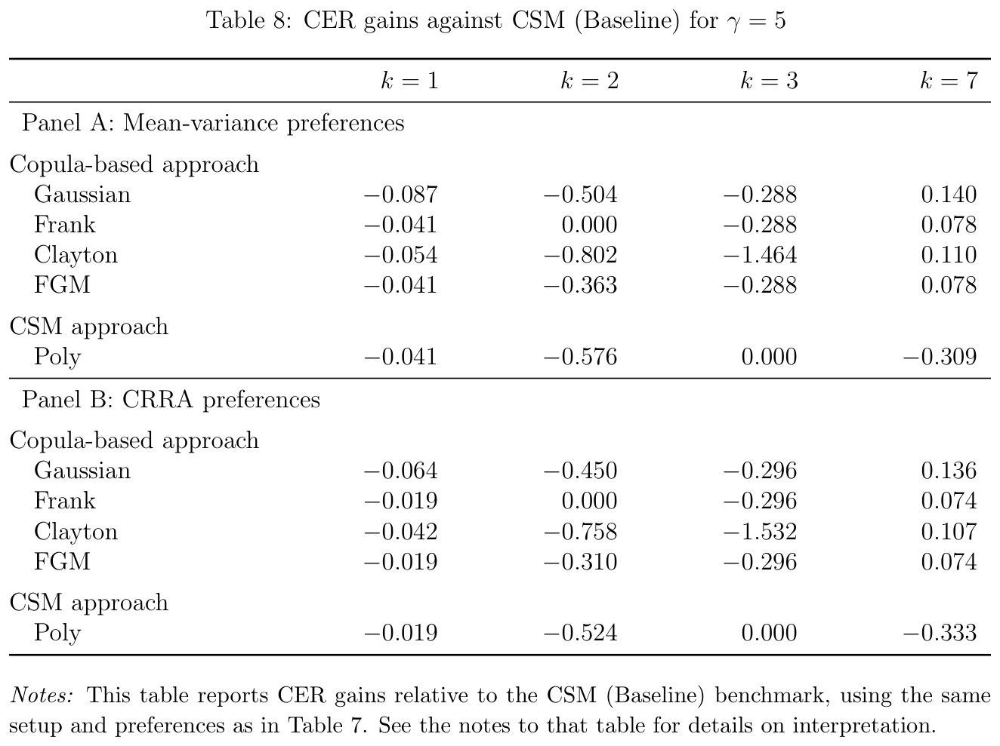
| printed | ours | |||
|---|---|---|---|---|
| Panel A: Mean-variance preferences, Gaussian | k = 1 | -0.087 | 0.000 | differs |
| Panel A: Mean-variance preferences, Gaussian | k = 2 | -0.504 | 0.061 | differs |
| Panel A: Mean-variance preferences, Gaussian | k = 3 | -0.288 | 0.109 | differs |
| Panel A: Mean-variance preferences, Gaussian | k = 7 | 0.14 | -0.10 | differs |
| Panel A: Mean-variance preferences, Frank | k = 1 | -0.041 | -3.723 | differs |
| Panel A: Mean-variance preferences, Frank | k = 2 | 0.0 | -4.9 | differs |
| Panel A: Mean-variance preferences, Frank | k = 3 | -0.288 | -5.139 | differs |
| Panel A: Mean-variance preferences, Frank | k = 7 | 0.078 | -7.889 | differs |
| Panel A: Mean-variance preferences, Clayton | k = 1 | -0.054 | 0.054 | differs |
| Panel A: Mean-variance preferences, Clayton | k = 2 | -0.802 | 0.048 | differs |
| Panel A: Mean-variance preferences, Clayton | k = 3 | -1.464 | 0.109 | differs |
| Panel A: Mean-variance preferences, Clayton | k = 7 | 0.11 | -0.19 | differs |
| Panel A: Mean-variance preferences, FGM | k = 1 | -0.041 | 0.000 | differs |
| Panel A: Mean-variance preferences, FGM | k = 2 | -0.363 | 0.061 | differs |
| Panel A: Mean-variance preferences, FGM | k = 3 | -0.288 | 0.071 | differs |
| Panel A: Mean-variance preferences, FGM | k = 7 | 0.078 | -0.058 | differs |
16 of 40 cells shown.
the code that produced the right-hand column
alpha_archive/replications/decomp2026_eval.py · cer_crra()
def cer_crra(ret: np.ndarray) -> float:
power = np.power(1.0 + ret, 1.0 - GAMMA)
return float(np.mean(power) ** (1.0 / (1.0 - GAMMA)) - 1.0)Table A1
Table A1: Best subset selection based on MSE criterion
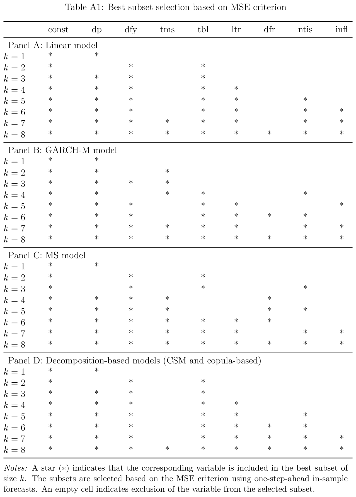
As Table 2, for MSE-based selection rather than AUC.
Table A2
Table A2: Out-of-sample R2 values (in %) for different models, loss functions, and subset sizes (k)
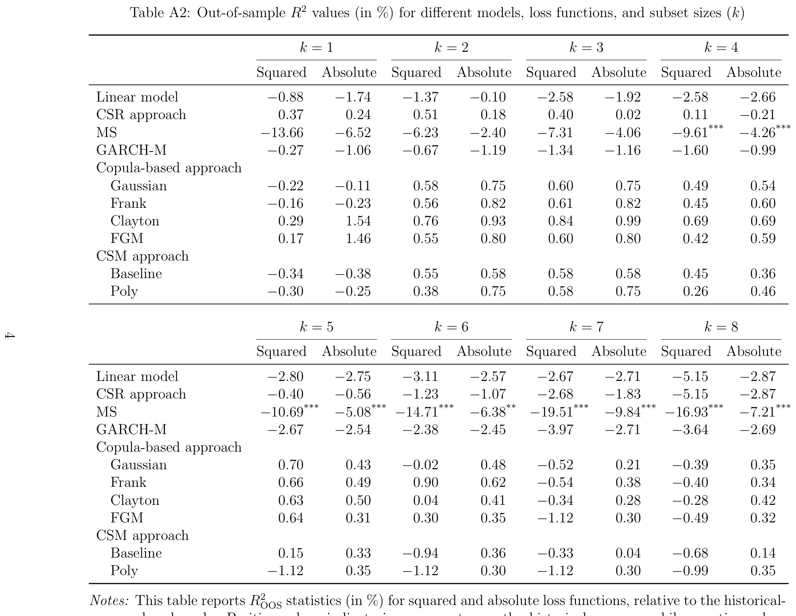
| printed | ours | |||
|---|---|---|---|---|
| Linear model, k = 1 | Squared | -0.88 | — | — |
| Linear model, k = 1 | Absolute | -1.74 | — | — |
| Linear model, k = 2 | Squared | -1.37 | — | — |
| Linear model, k = 2 | Absolute | -0.1 | — | — |
| Linear model, k = 3 | Squared | -2.58 | — | — |
| Linear model, k = 3 | Absolute | -1.92 | — | — |
| Linear model, k = 4 | Squared | -2.58 | — | — |
| Linear model, k = 4 | Absolute | -2.66 | — | — |
| CSR approach, k = 1 | Squared | 0.37 | — | — |
| CSR approach, k = 1 | Absolute | 0.24 | — | — |
| CSR approach, k = 2 | Squared | 0.51 | — | — |
| CSR approach, k = 2 | Absolute | 0.18 | — | — |
| CSR approach, k = 3 | Squared | 0.4 | — | — |
| CSR approach, k = 3 | Absolute | 0.02 | — | — |
| CSR approach, k = 4 | Squared | 0.11 | — | — |
| CSR approach, k = 4 | Absolute | -0.21 | — | — |
16 of 160 cells shown.
Table B1
Table B1: Out-of-sample performance statistics for the trading strategies for k = 4, 5, 6, 8
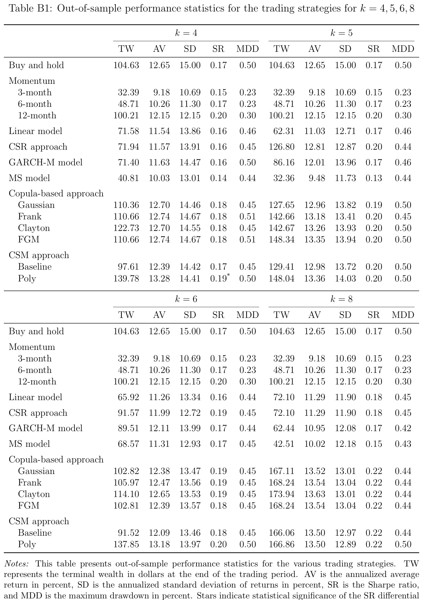
| printed | ours | |||
|---|---|---|---|---|
| Buy and hold, k =4 | TW | 104.63 | 104.62 | differs |
| Buy and hold, k =4 | AV | 12.65 | 12.65 | match |
| Buy and hold, k =4 | SD | 15.0 | 15.0 | match |
| Buy and hold, k =4 | SR | 0.17 | 0.17 | match |
| Buy and hold, k =4 | MDD | 0.5 | 0.5 | match |
| Buy and hold, k =5 | TW | 104.63 | 104.62 | differs |
| Buy and hold, k =5 | AV | 12.65 | 12.65 | match |
| Buy and hold, k =5 | SD | 15.0 | 15.0 | match |
| Buy and hold, k =5 | SR | 0.17 | 0.17 | match |
| Buy and hold, k =5 | MDD | 0.5 | 0.5 | match |
| Momentum, 3-month, k =4 | TW | 32.39 | 40.49 | differs |
| Momentum, 3-month, k =4 | AV | 9.18 | 10.07 | differs |
| Momentum, 3-month, k =4 | SD | 10.69 | 11.28 | differs |
| Momentum, 3-month, k =4 | SR | 0.15 | 0.16 | differs |
| Momentum, 3-month, k =4 | MDD | 0.23 | 0.32 | differs |
| Momentum, 3-month, k =5 | TW | 32.39 | 40.49 | differs |
16 of 280 cells shown.
the code that produced the right-hand column
alpha_archive/replications/decomp2026_eval.py · switching()
def switching(forecast: np.ndarray, mkt: np.ndarray, rf: np.ndarray) -> dict:
"""The paper's switching rule, and everything Table 6 reports about it."""
equity = forecast > 0
ret = np.where(equity, mkt, rf)
# Nothing is held before the first decision, so the first allocation is not
# a switch. Charging it would put a cost on buy-and-hold, whose printed
# 104.63 is exactly the uncosted compounding of the index.
switched = np.empty(len(equity), dtype=bool)
switched[0] = False
switched[1:] = equity[1:] != equity[:-1]
wealth = np.cumprod((1.0 + ret) * np.where(switched, 1.0 - COST, 1.0))
peak = np.maximum.accumulate(wealth)
return {
"returns": ret,
"excess": ret - rf,
"wealth": wealth,
"TW": float(wealth[-1]),
"AV": float(ret.mean() * MONTHS * 100.0),
"SD": float(ret.std(ddof=1) * np.sqrt(MONTHS) * 100.0),
"SR": float((ret - rf).mean() / ret.std(ddof=1)),
"MDD": float(np.max(1.0 - wealth / peak)),
"switches": int(switched.sum()),
}Table B2
Table B2: CER gains against historical average for γ = 5
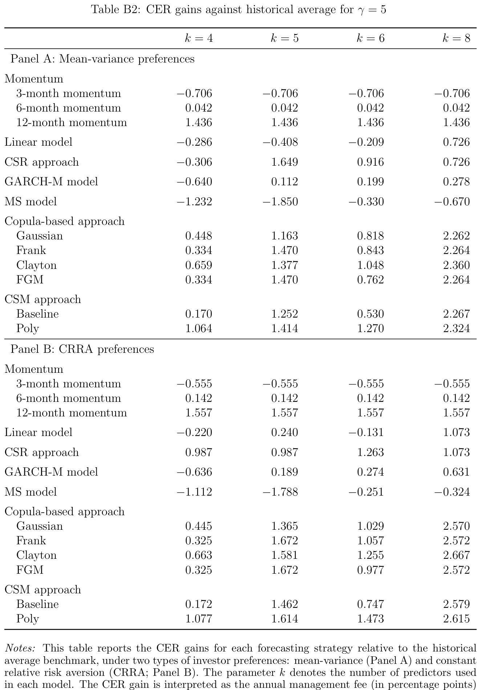
| printed | ours | |||
|---|---|---|---|---|
| Panel A: Mean-variance preferences, 3-month momentum | k = 4 | -0.706 | -0.139 | differs |
| Panel A: Mean-variance preferences, 3-month momentum | k = 5 | -0.706 | -0.139 | differs |
| Panel A: Mean-variance preferences, 3-month momentum | k = 6 | -0.706 | -0.139 | differs |
| Panel A: Mean-variance preferences, 3-month momentum | k = 8 | -0.706 | -0.139 | differs |
| Panel A: Mean-variance preferences, 6-month momentum | k = 4 | 0.042 | 0.054 | differs |
| Panel A: Mean-variance preferences, 6-month momentum | k = 5 | 0.042 | 0.054 | differs |
| Panel A: Mean-variance preferences, 6-month momentum | k = 6 | 0.042 | 0.054 | differs |
| Panel A: Mean-variance preferences, 6-month momentum | k = 8 | 0.042 | 0.054 | differs |
| Panel A: Mean-variance preferences, 12-month momentum | k = 4 | 1.436 | 1.047 | differs |
| Panel A: Mean-variance preferences, 12-month momentum | k = 5 | 1.436 | 1.047 | differs |
| Panel A: Mean-variance preferences, 12-month momentum | k = 6 | 1.436 | 1.047 | differs |
| Panel A: Mean-variance preferences, 12-month momentum | k = 8 | 1.436 | 1.047 | differs |
| Panel A: Mean-variance preferences, Linear model | k = 4 | -0.286 | -0.229 | differs |
| Panel A: Mean-variance preferences, Linear model | k = 5 | -0.408 | -0.302 | differs |
| Panel A: Mean-variance preferences, Linear model | k = 6 | -0.209 | -0.095 | differs |
| Panel A: Mean-variance preferences, Linear model | k = 8 | 0.726 | 0.874 | differs |
16 of 104 cells shown.
the code that produced the right-hand column
alpha_archive/replications/decomp2026_eval.py · cer_mean_variance()
def cer_mean_variance(ret: np.ndarray) -> float:
return float(ret.mean() - 0.5 * GAMMA * ret.var(ddof=1))Table B3
Table B3: CER gains against CSM (Baseline) for γ = 5
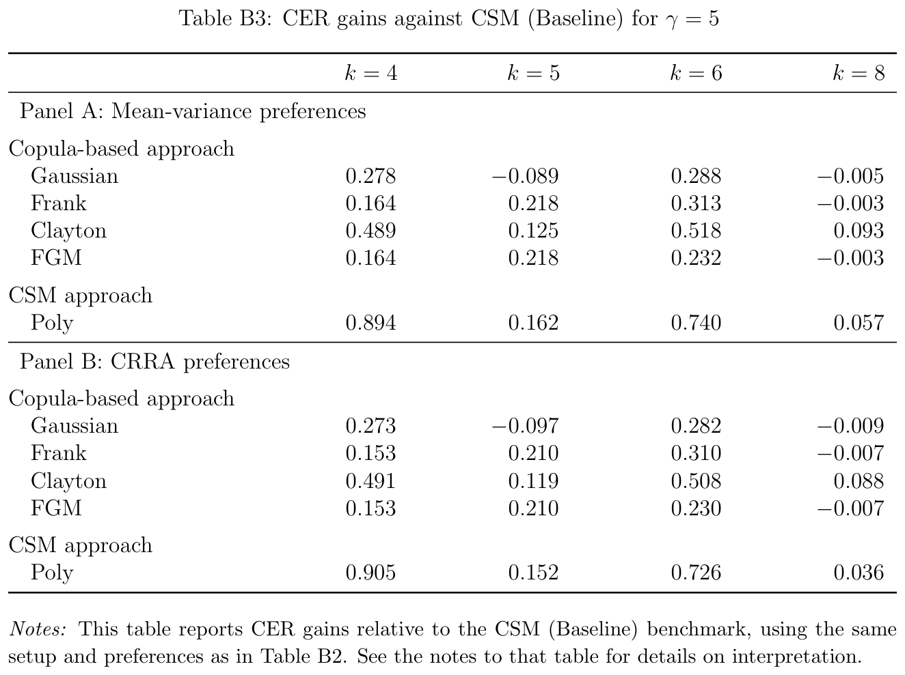
| printed | ours | |||
|---|---|---|---|---|
| Panel A: Mean-variance preferences, Gaussian | k = 4 | 0.278 | -0.059 | differs |
| Panel A: Mean-variance preferences, Gaussian | k = 5 | -0.089 | 0.099 | differs |
| Panel A: Mean-variance preferences, Gaussian | k = 6 | 0.288 | 0.151 | differs |
| Panel A: Mean-variance preferences, Gaussian | k = 8 | -0.005 | -0.243 | differs |
| Panel A: Mean-variance preferences, Frank | k = 4 | 0.164 | -5.644 | differs |
| Panel A: Mean-variance preferences, Frank | k = 5 | 0.218 | -5.931 | differs |
| Panel A: Mean-variance preferences, Frank | k = 6 | 0.313 | -5.136 | differs |
| Panel A: Mean-variance preferences, Frank | k = 8 | -0.003 | -7.948 | differs |
| Panel A: Mean-variance preferences, Clayton | k = 4 | 0.489 | 0.251 | differs |
| Panel A: Mean-variance preferences, Clayton | k = 5 | 0.125 | 0.306 | differs |
| Panel A: Mean-variance preferences, Clayton | k = 6 | 0.518 | 0.319 | differs |
| Panel A: Mean-variance preferences, Clayton | k = 8 | 0.093 | 0.043 | differs |
| Panel A: Mean-variance preferences, FGM | k = 4 | 0.164 | 0.193 | differs |
| Panel A: Mean-variance preferences, FGM | k = 5 | 0.218 | 0.329 | differs |
| Panel A: Mean-variance preferences, FGM | k = 6 | 0.232 | 0.359 | differs |
| Panel A: Mean-variance preferences, FGM | k = 8 | -0.003 | 0.038 | differs |
16 of 40 cells shown.
the code that produced the right-hand column
alpha_archive/replications/decomp2026_eval.py · cer_crra()
def cer_crra(ret: np.ndarray) -> float:
power = np.power(1.0 + ret, 1.0 - GAMMA)
return float(np.mean(power) ** (1.0 / (1.0 - GAMMA)) - 1.0)Table C1
Table C1: Out-of-sample performance statistics for the trading strategies during crisis peri- ods
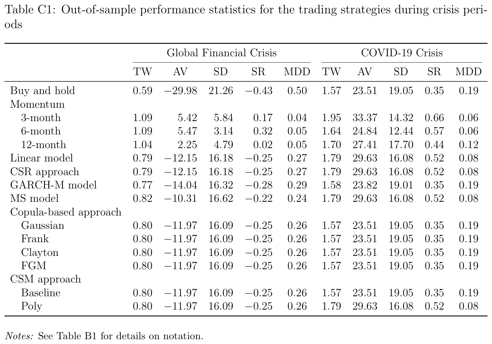
| printed | ours | |||
|---|---|---|---|---|
| Buy and hold, Global Financial Crisis | TW | 0.59 | — | — |
| Buy and hold, Global Financial Crisis | AV | -29.98 | — | — |
| Buy and hold, Global Financial Crisis | SD | 21.26 | — | — |
| Buy and hold, Global Financial Crisis | SR | -0.43 | — | — |
| Buy and hold, Global Financial Crisis | MDD | 0.5 | — | — |
| Buy and hold, COVID-19 Crisis | TW | 1.57 | — | — |
| Buy and hold, COVID-19 Crisis | AV | 23.51 | — | — |
| Buy and hold, COVID-19 Crisis | SD | 19.05 | — | — |
| Buy and hold, COVID-19 Crisis | SR | 0.35 | — | — |
| Buy and hold, COVID-19 Crisis | MDD | 0.19 | — | — |
| Momentum, 3-month, Global Financial Crisis | TW | 1.09 | — | — |
| Momentum, 3-month, Global Financial Crisis | AV | 5.42 | — | — |
| Momentum, 3-month, Global Financial Crisis | SD | 5.84 | — | — |
| Momentum, 3-month, Global Financial Crisis | SR | 0.17 | — | — |
| Momentum, 3-month, Global Financial Crisis | MDD | 0.04 | — | — |
| Momentum, 3-month, COVID-19 Crisis | TW | 1.95 | — | — |
16 of 140 cells shown.
the code that produced the right-hand column
alpha_archive/replications/decomp2026_eval.py · crisis_tables()
def crisis_tables(frame: pd.DataFrame,
forecasts: dict[str, np.ndarray]) -> dict[str, float]:
"""Table C1: the same strategies, scored inside two named windows.
The forecasts are the ones already produced for k = 8; re-estimating inside
the crisis would be a different exercise from the one the appendix
describes, which evaluates the main analysis over a sub-period.
"""
oos = frame.iloc[WINDOW:]
index = oos.index
mkt, rf = oos["mkt"].to_numpy(), oos["rf"].to_numpy()
rows: dict[str, np.ndarray] = {"Buy and hold": np.ones(len(mkt))}
for n in MOMENTUM:
rows[f"{n}-month"] = momentum_positions(frame, n)
rows.update(forecasts)
out: dict[str, float] = {}
for name, (start, end) in CRISES.items():
mask = (index >= start) & (index <= f"{end}-31")
for row, signal in rows.items():
if row == "Historical average":
continue
# Wealth restarts at $1 inside the window, so the slice is taken
# before compounding rather than read off the full path.
s = switching(signal[mask], mkt[mask], rf[mask])
label = (f"TC1/Momentum/{row}" if row.endswith("-month")
else f"TC1/{row}")
for metric in ("TW", "AV", "SD", "SR", "MDD"):
out[f"{label}/{name}/{metric}"] = s[metric]
return outTable D1
Table D1: Out-of-sample R2 and economic performance across models
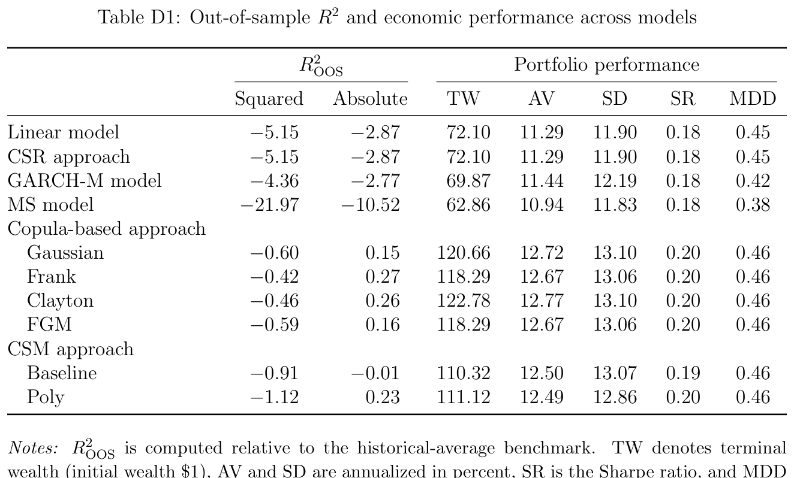
| printed | ours | |||
|---|---|---|---|---|
| Linear model, OOS | Squared | -5.15 | — | — |
| Linear model, OOS | Absolute | -2.87 | — | — |
| Linear model, OOS | TW | 72.1 | — | — |
| Linear model, OOS | AV | 11.29 | — | — |
| Linear model, OOS | SD | 11.9 | — | — |
| Linear model, OOS | SR | 0.18 | — | — |
| Linear model, OOS | MDD | 0.45 | — | — |
| CSR approach, OOS | Squared | -5.15 | — | — |
| CSR approach, OOS | Absolute | -2.87 | — | — |
| CSR approach, OOS | TW | 72.1 | — | — |
| CSR approach, OOS | AV | 11.29 | — | — |
| CSR approach, OOS | SD | 11.9 | — | — |
| CSR approach, OOS | SR | 0.18 | — | — |
| CSR approach, OOS | MDD | 0.45 | — | — |
| GARCH-M model, OOS | Squared | -4.36 | — | — |
| GARCH-M model, OOS | Absolute | -2.77 | — | — |
16 of 70 cells shown.
the code that produced the right-hand column
alpha_archive/replications/decomp2026_eval.py · full_set_table()
def full_set_table(frame: pd.DataFrame, families: tuple[str, ...]) -> dict[str, float]:
"""Table D1: every model re-estimated on all nine predictors at once.
One subset rather than a grid, so this is a single pass of each forecast
rather than another eight.
"""
wide, names = with_momentum(frame)
subset = tuple(names)
oos = wide.iloc[WINDOW:]
mkt, rf, xs = (oos["mkt"].to_numpy(), oos["rf"].to_numpy(),
oos["xs"].to_numpy())
ha = forecast_historical_average(wide)
forecasts = {
"Linear model": forecast_linear(wide, subset),
"CSR approach": forecast_csr(wide, len(subset)),
"CSM approach/Baseline": forecast_csm(wide, subset, poly=False),
"CSM approach/Poly": forecast_csm(wide, subset, poly=True),
}
for fam in families:
forecasts[f"Copula-based approach/{fam}"] = forecast_copula(
wide, subset, fam)
out: dict[str, float] = {}
for row, fc in forecasts.items():
s = switching(fc, mkt, rf)
out[f"TD1/{row}/OOS/Squared"] = r2_oos(xs, fc, ha)
out[f"TD1/{row}/OOS/Absolute"] = r2_oos(xs, fc, ha, absolute=True)
for metric in ("TW", "AV", "SD", "SR", "MDD"):
out[f"TD1/{row}/OOS/{metric}"] = s[metric]
return outExhibit by exhibit
Where the coverage actually is, so a table we never reached cannot pass for one that agreed.
| exhibit | printed | checked | matched | missed | not built | rate |
|---|---|---|---|---|---|---|
| Table 6 | 280 | 240 | 85 | 155 | 40 | 35% |
| Table B1 | 280 | 240 | 73 | 167 | 40 | 30% |
| Table 4 | 176 | 144 | 49 | 95 | 32 | 34% |
| Table 5 | 176 | 144 | 29 | 115 | 32 | 20% |
| Table 3 | 160 | 128 | 2 | 126 | 32 | 2% |
| Table 7 | 104 | 88 | 1 | 87 | 16 | 1% |
| Table B2 | 104 | 88 | 0 | 88 | 16 | 0% |
| Table 1 | 64 | 64 | 39 | 25 | 61% | |
| Table 8 | 40 | 40 | 0 | 40 | 0% | |
| Table B3 | 40 | 40 | 0 | 40 | 0% | |
| Figure 1 | no printed numbers | |||||
| Figure 2 | no printed numbers | |||||
| Figure 3 | no printed numbers | |||||
| Figure 4 | no printed numbers | |||||
| Figure A1 | no printed numbers | |||||
| Figure C1 | no printed numbers | |||||
| Figure C2 | no printed numbers | |||||
| Figure D1 | no printed numbers | |||||
| Table 2 | no printed numbers | |||||
| Table A1 | no printed numbers | |||||
| Table A2 | 160 | 0 | 0 | 160 | — | |
| Table C1 | 140 | 0 | 0 | 140 | — | |
| Table D1 | 70 | 0 | 0 | 70 | — | |
Abstract
Changes in volatility contain valuable information about the likelihood of positive versus negative returns. We propose a new approach to modeling financial returns that exploits this insight by decomposing returns into sign and magnitude (absolute value) components, with magnitude closely related to volatility. The joint distribution used to compute expected returns combines a model for the marginal distribution of magnitude with a model for the distribution of the sign, conditional on the contemporaneous magnitude. Unlike traditional linear predictive regressions, this decomposition framework captures nonlinear predictability in return dynamics. An out-of-sample forecasting evaluation using monthly U.S. stock market excess returns demonstrates substantial statistical and economic gains relative to linear regression and complete subset regression, while delivering performance that is competitive with copula-based return-decomposition methods and other nonlinear benchmarks.
Where this stands
Every number above was scored against a tolerance written down before any of these models produced a value. A miss is recorded as a miss; nothing was widened to clear a bar.